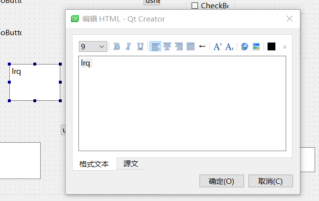
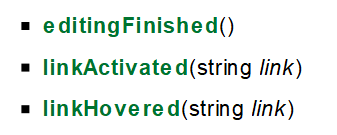

05 控件 QTextEdit
QTextEdit
这一个笔记做的是依托答辩，我感觉这个控件也不常用，等用到了再仔细看看吧
QTextEdit是一个先进的所见即所得的 富文本 查看器/编辑器，支持使用 html 风格的标签或Markdown格式的富文本格式化。它经过优化，可以处理大型文档，并快速响应用户输入。

1.富文本阅读器
1.1用法
QTextEdit可以显示一个大的HTML子集，包括表格和图像。
1.可以使用 setHtml() 设置或替换文本，它会删除任何现有的文本，并用调用 setHtml() 时传递的文本替换它。如果用旧HTML调用 setHtml() ，然后调用 toHtml() ，返回的文本可能有不同的标记，但渲染的是相同的。可以使用 clear() 删除整个文本。
2.文本也可以使用 setMarkdown()来设置或替换，同样的注意事项也适用:如果你调用了 tommarkdown()，返回的文本可能不同，但尽可能地保留了文本的含义。嵌入了HTML的Markdown可以被解析，但setHtml()有相同的限制;但是，toMarkdown()只编写“纯”Markdown，没有嵌入任何HTML。
3.文本本身可以使用QTextCursor类插入，也可以使用便捷的函数 insertHtml()、insertPlainText()、append() 或paste()。QTextCursor还能够向文档中插入复杂的对象，如表或列表，它还可以创建选择并对选择的文本应用更改。
4.默认情况下，文本编辑会在空白处包装单词，以适应文本编辑控件。setLineWrapMode()函数用于指定需要的换行方式，如果不需要换行，则指定NoWrap。调用setLineWrapMode()来设置固定像素宽度FixedPixelWidth或字符列(例如80列)FixedColumnWidth，使用setlinewrapcolumnwidth()指定的像素或列数。如果将换行设置为窗口组件的宽度WidgetWidth，则可以使用setWordWrapMode()指定是否在空格处换行。
5.find()函数可用于在文本中查找和选择给定的字符串。
6.如果你想限制QTextEdit中的总段落数，例如它通常在日志查看器中很有用，那么你可以用QTextDocument的maximumBlockCount属性。
2.编辑器
1.当前字符格式的属性是通过setFontItalic()、setFontWeight()、setFontUnderline()、setFontFamily()、setFontPointSize()、setTextColor()和setCurrentFont()来设置的。
2.当前段落的对齐方式使用setAlignment()来设置。
3.选择文本是由QTextCursor类处理的，它提供了创建选择文本、检索文本内容或删除选择文本的功能。
3.下面是一些常用的功能，也即是文本编辑器的基础功能
append(const QString &text)：就是在编辑器的最后添加 text
- clear()：清除编辑器的所有内容
- copy()：赋值内容到剪切板
- cut()：剪切内容到剪切板
- insertHtml(const QString &text)：插入html文档
- insertPlainText(const QString &text)：插入普通字符串
- paste()：从剪贴板粘贴到编辑器中
- redo()：撤销操作
- scrollToAnchor(const QString &name)： 把内容滚动到具体位置
- selectAll()：全选内容
- setAlignment(Qt::Alignment a)：文本对齐方式
- setCurrentFont(const QFont &f)：设置当前字体格式，里面有字体名称、字体大小等等。
- setFontFamily(const QString &fontFamily)：设置文字字体名称，比如是 微软雅黑，或者是 宋体 之类的
- setFontItalic(bool italic)：设置文字倾斜
- setFontPointSize(qreal s)：设置文字大小
- setFontUnderline(bool underline)：设置下划线
- setFontWeight(int weight)：设置文本加粗
- setHtml(const QString &text)：设置编辑器的内容为 html 格式
- setMarkdown(const QString &markdown)：设置编辑器的内容为 Markdown 格式
- setPlainText(const QString &text)：设置编辑器的内容为 纯字符 格式
- setText(const QString &text)：设置文本编辑的文本。文本可以是纯文本或HTML和文本编辑会试图猜测正确的格式。
- setTextBackgroundColor(const QColor &c)：设置背景
- setTextColor(const QColor &c)：设置颜色
- undo()：撤销上次操作
- zoomIn(int range = 1) ：缩放，把文字往小的变
- zoomOut(int range = 1)：扩大，把文字往大的变
3.信号
